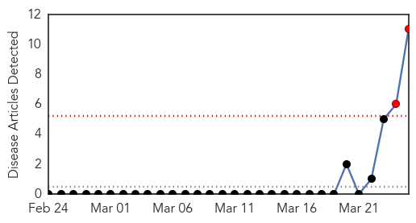
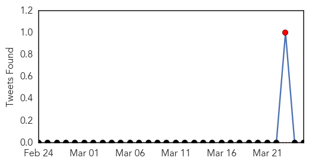
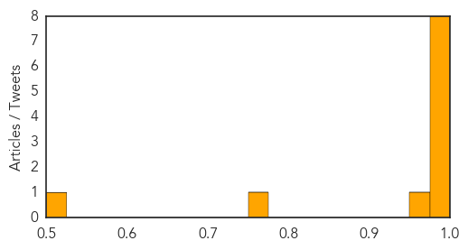
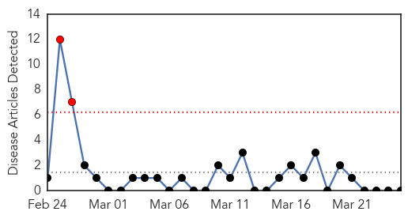
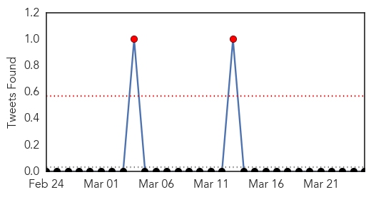

Hemmorhagic Fever
30-Day Web Trend
2 alerts, 0 warnings

30-Day Twitter Trend
2 alerts, 0 warnings

Article Locations

Article Confidences
Top Articles:
- 1.000
- Seriously ill Saskatchewan man prompts Ebola scare
- 1.000
- Possible Ebola case in Canada in man who traveled to West Africa
- 0.999
- Man falls ill after visit to western Africa
- 0.999
- Ebola Reaches Canada?
- 0.999
- Guinea hemorrhagic fever may have crossed into Sierra Leone
- 0.998
- Ebola ruled out in case of Saskatoon patient
- 0.998
- Ebola ruled out in case of Saskatoon patient
- 0.978
- Sick man in Saskatoon tests negative for Ebola
- 0.961
- Public Health Canada: ‘There are no confirmed cases of Ebola in Canada’
- 0.772
- Canadian who traveled to Africa may have Ebola
- 0.523
- 5 things to know for Tuesday, March 25
Top Tweets:
-
No tweets found for Mar 25, 2014
MERS
30-Day Web Trend
2 alerts, 0 warnings

30-Day Twitter Trend
4 alerts, 0 warnings

Article Locations

Article Confidences

Top Articles:
-
No articles found for Mar 25, 2014
Top Tweets:
-
No tweets found for Mar 25, 2014